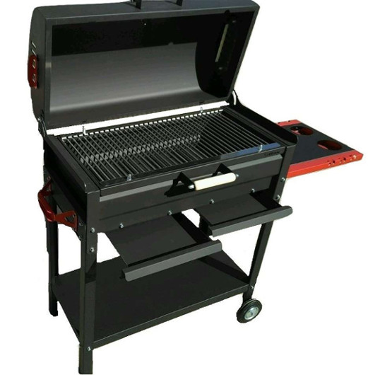

Ожог
меры предосторожности
- закрывать мангал
- убирать жидкости

что делать
При ожогах 1 степени (покраснение кожи):
- погрузите обожженный участок в прохладную воду (но не ниже 8ОС) минимум на двадцать минут;
- если ожог на лице – приложите холодное мокрое полотенце или подержите щеку под струей прохладной воды;
- не используйте лед, не смазывайте обожженное место сливочным маслом, жиром и не присыпайте тальком;
- не бинтуйте обожженный участок кожи, можно использовать лишь увлажняющие средства (пантенол)
При ожогах второй степени: (волдыри, вздутие и отторжение верхнего слоя кожи, сильная боль):
- используйте мазь с антимикробными средствами;
- забинтуйте место ожога при необходимости;
- обратитесь к врачу;
- ни в коем случае не прокалывайте волдыри
При ожогах третьей и четвертой степени: (волдыри, вздутие и отторжение верхнего слоя кожи, сильная боль):
- немедленно обратитесь к врачу, т.к. лечение происходит только в стационаре
Отравление:
- не вызывайте у него рвоту;
- если ребенок без сознания, необходимо повернуть его голову набок во избежание попадания рвотных масс в дыхательные пути;
- во всех случаях отравления срочно вызывайте скорую помощь;
- в больницу возьмите с собой образцы ядовитой субстанции и рвотной массы ребенка